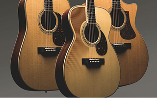
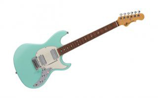

Although Gilmour’s Strat bears the serial number 0001, it’s not the first. Its unusual colour and gold hardware suggest it might have been a showpiece made for a special occasion.
The “first” Stratocaster actually bears the serial number 0100. Vintage guitar expert George Gruhn shows the guitar in the video below. As he explains, the guitar was made in April 1954, about a year before Gilmour’s, making it the first known Stratocaster to bear a serial number.
“This guitar is historically a very, very significant instrument,” Gruhn says, “not only significant in being an early Stratocaster but this is the earliest serial-numbered example of a model that is, of all electric guitars ever perhaps, the most iconic American-made electric guitar.”
Gruhn explains that there are earlier prototype Stratocasters, but notes, “Nobody has an intact original earlier than this. There were some prototypes... [but] the point is, this is the first one that had a serial number. It’s also the earliest one that is actually in good original condition.”
He talks about Fender’s history for much of the interview, but you can hear the guitar in action starting around the 18:30 mark. It’s followed by a more in-depth discussion about the Strat that continues to around the 25-minute mark.
Get a Sneak Peek of David Gilmour's Massive Guitar Auction in New Teaser Video
The massive sale includes the Pink Floyd legend’s iconic black Stratocaster.

Eastman Unveils New Double Top Acoustic Guitars
The guitars in the new series feature soundboards constructed with spruce, plus a 1mm slice of a printed material called Nomex.

G&L Debuts New Deluxe Skyhawk HH Guitar
The Fullerton Deluxe Skyhawk features G&L’s PTB (passive treble and bass) system and a push/pull coil-tap for single coil-like tones.